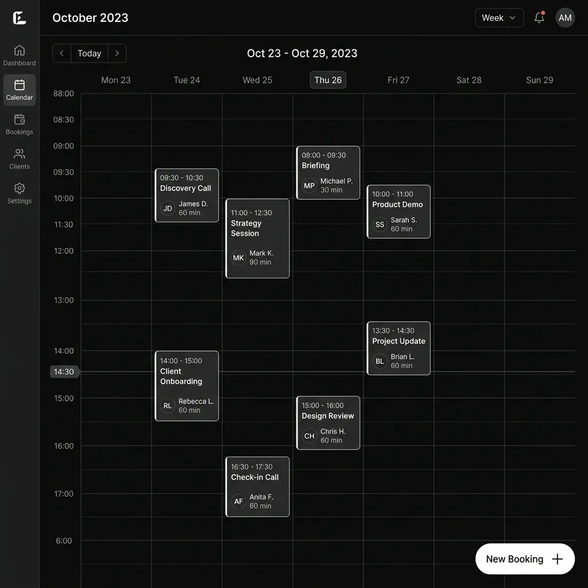

AgendaLink
Plataforma de agendamento que cobre o ciclo completo, do cadastro ao pagamento: fuso horário, conflitos de agenda e cobrança via Stripe.
Contexto & Problema
Profissionais autônomos gastam horas semanais organizando horários, lidando com no-shows e realizando cobranças manuais. Plataformas genéricas falham na flexibilidade de pagamentos locais ou carecem de regras de negócio personalizadas para o prestador de serviço brasileiro.
Arquitetura & Stack
- Frontend: React 19, Vite, Tailwind v4. Componentes visuais de calendário de alta performance.
- Banco de Dados: PostgreSQL via Supabase. Transacionalidade ACID e constraints rigorosas para evitar double-booking.
- Pagamentos: Edge Functions criam a sessão de Stripe Checkout e processam os webhooks — nenhuma chave secreta passa pelo navegador.
- Segurança: Row Level Security (RLS) diretamente no banco, eliminando vulnerabilidades na camada de aplicação.
Decisões Técnicas
O maior risco em um sistema de reservas é a concorrência (race conditions). Se dois clientes tentarem reservar o mesmo horário simultaneamente, o sistema não pode permitir ambas as gravações. Implementei travas no próprio banco (constraints no PostgreSQL) e validação no servidor antes de criar a cobrança, então o mesmo horário não pode ser vendido duas vezes.
Os algoritmos de fuso horário garantem que profissionais em diferentes regiões visualizem e gerenciem seus horários corretamente, sem conflitos de timezone.


Resultado
Um fluxo completo envolvendo dinheiro real: reserva, cobrança e confirmação. A integridade fica no banco (constraints + RLS) e os segredos de pagamento ficam no servidor (Edge Functions), deixando o front livre para focar em experiência.
Código-fonte privado. Faço um walkthrough técnico do projeto em call — fale comigo.